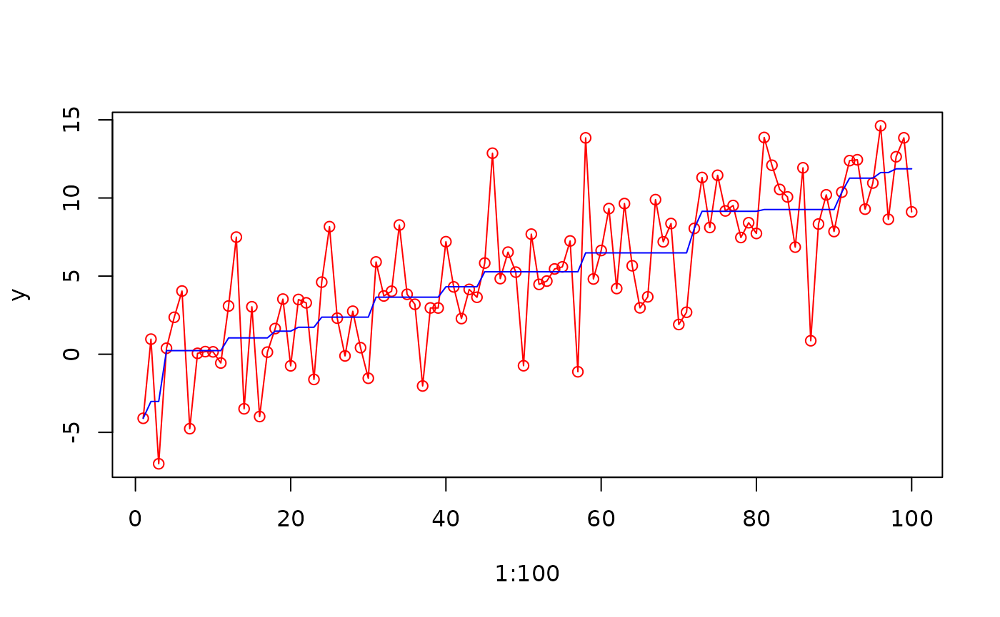
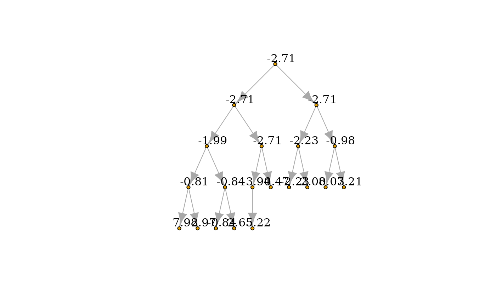
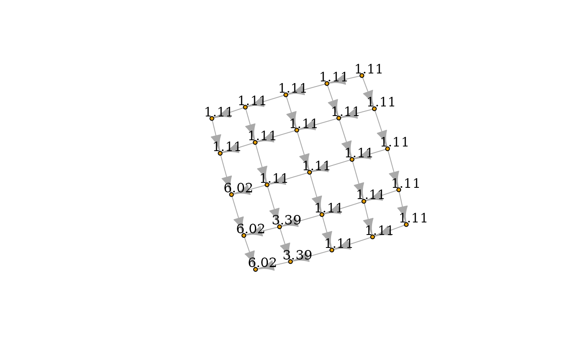
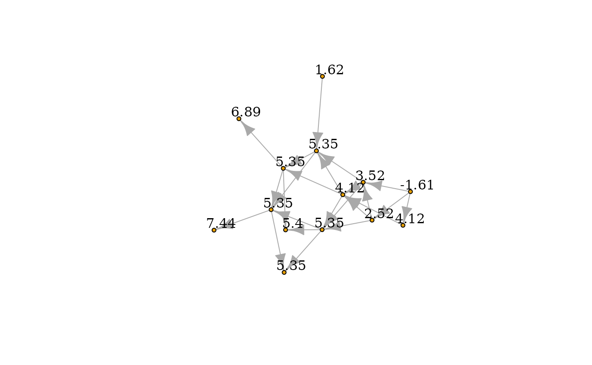

Sequential Block Merging Algorithm for General Isotone Optimization Under Quadratic Loss
Xiwen Wang and Daniel P. Palomar
The Hong Kong University of Science and Technology (HKUST)
The Hong Kong University of Science and Technology (HKUST)
2026-11-10
SBM_Isotone.RmdSolving Isotonic Regression under chain/binary tree/2d-grid isotonic constraints
The package IsotoneOptimization implements the Sequential Block Merging algorithm [1] for solving isotonic regression under constraints that can be represented by arbitrary directed acyclic graph. Here are some structures which are frequently used.
Chain isotonic constraints
Given optimization variable , the isotonic regression under chain isotonic constraints are given as
y <- 1:100 /10 + rnorm(100, 0, 3)
y_calibrated <- solve_isotone_chain(y)$x
plot(1:100,y,type="o",col="red")
lines(1:100,y_calibrated,col="blue")
Binary tree isotonic constraints
Given optimization variable , the isotonic regression under binary isotonic constraints are given as
We can solve the problem and plot the results via package igraph.
library(igraph)
p <- 20
# build a tree graph
tr <- make_tree(p, children = 2, mode = "out")
y <- 1:20 /10 + rnorm(20, 0, 3)
y_calibrated <- solve_isotone_binary_tree(y)$x
V(tr)$name <- as.character(round(y_calibrated,2))
plot(tr, vertex.size = 4, # Smaller nodes
vertex.label = V(tr)$name, # Set the labels
vertex.label.cex = 1, # Slightly smaller font
vertex.label.dist = 1.4, # Offset the labels
vertex.label.color = "black")
2d-grid isotonic constraints
Given optimization variable , the isotonic regression under binary isotonic constraints are given as
We can solve the problem and plot the results via package igraph.
library(igraph)
p <- 25
sqrt_p <- 5
E_mat <- c()
# build a 2d-grid graph
for(i in 1:4)
for(j in 1:5)
E_mat <- cbind(E_mat, c(i+(j-1)*sqrt_p, i+1+(j-1)*sqrt_p))
for(i in 1:5)
for(j in 1:4)
E_mat <- cbind(E_mat, c(i+(j-1)*sqrt_p, i+j*sqrt_p))
E_mat <- t(E_mat)
y <- 1:p /10 + rnorm(p, 0, 3)
y_calibrated <- solve_isotone_2d_grid(y)$x
grid_graph <- graph_from_edgelist(E_mat)
V(grid_graph)$name <- as.character(round(y_calibrated,2))
plot(grid_graph, vertex.size = 4, # Smaller nodes
vertex.label = V(grid_graph)$name, # Set the labels
vertex.label.cex = 1, # Slightly smaller font
vertex.label.dist = 1.4, # Offset the labels
vertex.label.color = "black")
Solving Isotonic Regression with isotonic constraints via arbitrary DAG
We can also define any constraints graph as long as it is directed acyclic. The below example generate a random DAG. By using the function Ordered_DAG, we solve the following problem
set.seed(12)
start_nodes <- rep(1:10,3)
end_nodes <- start_nodes + round(runif(30, 1, 5))
E_mat <- cbind(start_nodes, end_nodes)
DAG_graph <- graph_from_edgelist(E_mat)
DAG_graph <- simplify(
DAG_graph,
remove.multiple = TRUE,
remove.loops = TRUE,
edge.attr.comb = igraph_opt("edge.attr.comb")
)
E_mat <- as_edgelist(DAG_graph)
y <- 1:max(E_mat)/2 + rnorm(max(E_mat), 0, 3)
y_calibrated <- solve_isotone_DAG(y, rep(1,max(E_mat)), E_mat)$x
V(DAG_graph)$name <- as.character(round(y_calibrated,2))
plot(DAG_graph, vertex.size = 4, # Smaller nodes
vertex.label = V(DAG_graph)$name, # Set the labels
vertex.label.cex = 1, # Slightly smaller font
vertex.label.dist = 1.4, # Offset the labels
vertex.label.color = "black")